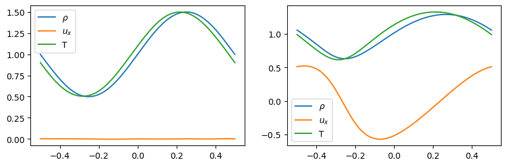

基于神经网络表示求解玻尔兹曼方程


问题描述
本案例演示如何利用神经网络求解1+3维的玻尔兹曼方程。玻尔兹曼方程是关于气体密度分布函数\(f\)的方程，其定义为
\[\newcommand{\bm}[1]{\boldsymbol{#1}}
\begin{equation}
\label{eq:Boltzmann}
\frac{\partial f(\bm x,\bm v,t)}{\partial t}+\bm{v} \cdot\nabla_{\bm x} f(\bm x,\bm v,t)=\mathcal{Q}[f](\bm x, \bm v,t), \qquad t \in \mathbb{R}^+, \quad \bm x \in \mathbb{R}^3, \quad \bm v \in \mathbb{R}^3.
\end{equation}\]
其中\(\mathcal{Q}[f]\)为碰撞项算子。通过\(f\)，我们可以获取气体的宏观物理变量
\[\begin{split}\require{braket}
\begin{equation}
\begin{gathered}
\rho(\bm x,t)=\int f d \bm v,\\
\bm{m}(\bm x, t) \triangleq \rho \bm u(\bm x,t)=\int f \bm v f d\bm v,\\
E(\bm x, t) \triangleq \frac{3}{2}\rho T(\bm x, t) + \frac{1}{2}\rho |\bm u|^2 = \frac{1}{2} \int \vert\bm v\vert^2 f d \bm v.
\end{gathered}
\end{equation}\end{split}\]
对于简化模型如BGK模型，碰撞项算子的定义为
\[\begin{equation}
\label{eq:BGK}
\mathcal{Q}^{\rm BGK}[f]=\frac{1}{\tau}(\mathcal{M}-f).
\end{equation}\]
其中
\[\begin{equation}
\label{eq:Maxwellian}
\mathcal{M}=\frac{\rho}{\sqrt{2\pi T}^3}\exp \left( -\frac{|\bm v-\bm u|^2}{2 T} \right).
\end{equation}\]
本案例将研究物理空间为1维，微观速度空间为3维的周期边界条件的玻尔兹曼-BGK方程。其初值为
\[\begin{equation}
\rho(x)=1+0.5\sin(2\pi x),\qquad
\bm{u}(x)=0,\qquad
T(x)=1+0.5\sin(2\pi x+0.2).
\end{equation}\]
技术路径
MindSpore Flow求解该问题的具体流程如下：
创建数据集。
构建模型。
优化器。
Burgers1D。
模型训练。
模型推理及可视化。
[1]:
import time
import numpy as np
import mindspore as ms
from mindspore import ops, nn
import mindspore.numpy as mnp
ms.set_context(mode=ms.context.GRAPH_MODE, device_target="GPU")
ms.set_seed(0)
[2]:
from mindflow.utils import load_yaml_config
from src.boltzmann import BoltzmannBGK, BGKKernel
from src.utils import get_vdis, visual, mesh_nd
from src.cells import SplitNet, MultiRes, Maxwellian, MtlLoss, JacFwd, RhoUTheta, PrimNorm
from src.dataset import Wave1DDataset
[3]:
config = load_yaml_config("WaveD1V3.yaml")
创建数据集
我们选区的计算区域为\([-0.5,0.5]\times[0,0.1]\)，我们在初值选取100个点，在边界选取100个点，在区域内部选取700个点。
[4]:
class Wave1DDataset(nn.Cell):
"""dataset for 1D wave problem"""
def __init__(self, config):
super().__init__()
self.config = config
xmax = config["xtmesh"]["xmax"]
xmin = config["xtmesh"]["xmin"]
nv = config["vmesh"]["nv"]
vmin = config["vmesh"]["vmin"]
vmax = config["vmesh"]["vmax"]
v, _ = mesh_nd(vmin, vmax, nv)
self.xmax = xmax
self.xmin = xmin
self.vdis = ms.Tensor(v.astype(np.float32))
self.maxwellian = Maxwellian(self.vdis)
self.iv_points = self.config["dataset"]["iv_points"]
self.bv_points = self.config["dataset"]["bv_points"]
self.in_points = self.config["dataset"]["in_points"]
self.uniform = ops.UniformReal(seed=0)
def construct(self):
# Initial value points
iv_x = self.uniform((self.iv_points, 1)) * \
(self.xmax - self.xmin) + self.xmin
iv_t = mnp.zeros_like(iv_x)
# boundary value points
bv_x1 = -0.5 * mnp.ones(self.bv_points)[..., None]
bv_t1 = self.uniform((self.bv_points, 1)) * 0.1
bv_x2 = 0.5 * mnp.ones(self.bv_points)[..., None]
bv_t2 = bv_t1
# inner points
in_x = self.uniform((self.in_points, 1)) - 0.5
in_t = self.uniform((self.in_points, 1)) * 0.1
return {
"in": ops.concat([in_x, in_t], axis=-1),
"iv": ops.concat([iv_x, iv_t], axis=-1),
"bv1": ops.concat([bv_x1, bv_t1], axis=-1),
"bv2": ops.concat([bv_x2, bv_t2], axis=-1),
}
dataset = Wave1DDataset(config)
构建模型
本案例使用层数为6层，每层80个神经元的神经网络结构。我们的网络由两部分构成，其中一部分网络是Maxwellian平衡态的形式，另一部分则是离散速度分布的形式，这样的结构有助于训练。
[5]:
class SplitNet(nn.Cell):
"""the network combined the maxwellian and non-maxwellian"""
def __init__(self, in_channel, layers, neurons, vdis, alpha=0.01):
super().__init__()
self.net_eq = MultiRes(in_channel, 5, layers, neurons)
self.net_neq = MultiRes(in_channel, vdis.shape[0], layers, neurons)
self.maxwellian = Maxwellian(vdis)
self.alpha = alpha
def construct(self, xt):
www = self.net_eq(xt)
rho, u, theta = www[..., 0:1], www[..., 1:4], www[..., 4:5]
rho = ops.exp(-rho)
theta = ops.exp(-theta)
x1 = self.maxwellian(rho, u, theta)
x2 = self.net_neq(xt)
y = x1 * (x1 + self.alpha * x2)
return y
vdis, _ = get_vdis(config["vmesh"])
model = SplitNet(2, config["model"]["layers"],
config["model"]["neurons"], vdis)
BoltzmannBGK
[6]:
class BoltzmannBGK(nn.Cell):
"""The Boltzmann BGK model"""
def __init__(self, net, kn, vconfig, iv_weight=100, bv_weight=100, pde_weight=10):
super().__init__()
self.net = net
self.kn = kn
vdis, wdis = get_vdis(vconfig)
self.vdis = vdis
loss_num = 3 * (vdis.shape[0] + 1 + 2 * vdis.shape[-1])
self.mtl = MtlLoss(loss_num)
self.jac = JacFwd(self.net)
self.iv_weight = iv_weight
self.bv_weight = bv_weight
self.pde_weight = pde_weight
self.maxwellian_nd = Maxwellian(vdis)
self.rho_u_theta = RhoUTheta(vdis, wdis)
self.criterion_norm = lambda x: ops.square(x).mean(axis=0)
self.criterion = lambda x, y: ops.square(x - y).mean(axis=0)
self.prim_norm = PrimNorm(vdis, wdis)
self.collision = BGKKernel(
vconfig["vmin"], vconfig["vmax"], vconfig["nv"])
def governing_equation(self, inputs):
f, fxft = self.jac(inputs)
fx, ft = fxft[0], fxft[1]
pde = ft + self.vdis[..., 0] * fx - self.collision(f, self.kn)
return pde
def boundary_condition(self, bv_points1, bv_points2):
fl = self.net(bv_points1)
fr = self.net(bv_points2)
return fl - fr
def initial_condition(self, inputs):
iv_pred = self.net(inputs)
iv_x = inputs[..., 0:1]
rho_l = ops.sin(2 * np.pi * iv_x) * 0.5 + 1
u_l = ops.zeros((iv_x.shape[0], 3), ms.float32)
theta_l = ops.sin(2 * np.pi * iv_x + 0.2) * 0.5 + 1
iv_truth = self.maxwellian_nd(rho_l, u_l, theta_l)
return iv_pred - iv_truth
def loss_fn(self, inputs):
"""the loss function"""
return self.criterion_norm(inputs), self.prim_norm(inputs)
def construct(self, domain_points, iv_points, bv_points1, bv_points2):
"""combined all loss function"""
pde = self.governing_equation(domain_points)
iv = self.initial_condition(iv_points)
bv = self.boundary_condition(bv_points1, bv_points2)
loss_pde = self.pde_weight * self.criterion_norm(pde)
loss_pde2 = self.pde_weight * self.prim_norm(pde)
loss_bv = self.bv_weight * self.criterion_norm(bv)
loss_bv2 = self.bv_weight * self.prim_norm(bv)
loss_iv = self.iv_weight * self.criterion_norm(iv)
loss_iv2 = self.iv_weight * self.prim_norm(iv)
loss_sum = self.mtl(
ops.concat(
[loss_iv, loss_iv2, loss_bv, loss_bv2, loss_pde, loss_pde2], axis=-1
)
)
return loss_sum, (loss_iv, loss_iv2, loss_bv, loss_bv2, loss_pde, loss_pde2)
problem = BoltzmannBGK(model, config["kn"], config["vmesh"])
优化器
[7]:
cosine_decay_lr = nn.CosineDecayLR(
config["optim"]["lr_scheduler"]["min_lr"],
config["optim"]["lr_scheduler"]["max_lr"],
config["optim"]["Adam_steps"],
)
optim = nn.Adam(params=problem.trainable_params(),
learning_rate=cosine_decay_lr)
模型训练
[8]:
grad_fn = ops.value_and_grad(problem, None, optim.parameters, has_aux=True)
@ms.jit
def train_step(*inputs):
loss, grads = grad_fn(*inputs)
optim(grads)
return loss
start_time = time.time()
for i in range(1, config["optim"]["Adam_steps"] + 1):
time_beg = time.time()
ds = dataset()
loss, _ = train_step(*ds)
if i % 500 == 0:
e_sum = loss.mean().asnumpy().item()
print(
f"epoch: {i} loss: {e_sum:.3e} epoch time: {(time.time() - time_beg) * 1000 :.3f} ms"
)
print("End-to-End total time: {} s".format(time.time() - start_time))
ms.save_checkpoint(problem, f"./model.ckpt")
epoch: 500 loss: 2.396e-01 epoch time: 194.953 ms
epoch: 1000 loss: 3.136e-02 epoch time: 193.463 ms
epoch: 1500 loss: 1.583e-03 epoch time: 191.280 ms
epoch: 2000 loss: 2.064e-04 epoch time: 191.099 ms
epoch: 2500 loss: 1.434e-04 epoch time: 190.477 ms
epoch: 3000 loss: 1.589e-04 epoch time: 190.489 ms
epoch: 3500 loss: 9.694e-05 epoch time: 190.476 ms
epoch: 4000 loss: 8.251e-05 epoch time: 191.893 ms
epoch: 4500 loss: 7.238e-05 epoch time: 190.835 ms
epoch: 5000 loss: 5.705e-05 epoch time: 190.611 ms
epoch: 5500 loss: 4.932e-05 epoch time: 190.530 ms
epoch: 6000 loss: 4.321e-05 epoch time: 190.756 ms
epoch: 6500 loss: 4.205e-05 epoch time: 191.470 ms
epoch: 7000 loss: 3.941e-05 epoch time: 190.781 ms
epoch: 7500 loss: 3.328e-05 epoch time: 190.543 ms
epoch: 8000 loss: 3.113e-05 epoch time: 190.786 ms
epoch: 8500 loss: 2.995e-05 epoch time: 190.864 ms
epoch: 9000 loss: 2.875e-05 epoch time: 190.796 ms
epoch: 9500 loss: 2.806e-05 epoch time: 188.351 ms
epoch: 10000 loss: 2.814e-05 epoch time: 189.244 ms
End-to-End total time: 2151.8691852092743 s
模型推理与可视化
[9]:
fig = visual(problem, config["visual_resolution"], "result.png")
fig.show()
